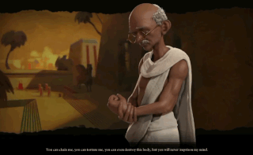

"An ounce of patience is worth more than a tonne of preaching."
|
|
"An ounce of patience is worth more than a tonne of preaching." |
|
MAJOR MOVEMENT FOR FREEDOM INDIA BY MAHATMA GANDHI |
|
|

One of his major achievements in 1918 were the
Champaran and Kheda agitations – a movement against
British landlords. The farmers and peasantry were forced
to grow and cultivate Indigo, and were even to forced to
sell them at fixed prices. Finally, these farmers pledged to
Mahatma Gandhi and non-violent protest took place.
Wherein Gandhiji won the battle.
Kheda, in the year 1918 was hit
Kheda, in the year 1918 was hit by floods and farmers
wanted relief from tax. Using non-cooperation as his main
weapon Gandhiji used it in pledging the farmers for nonpayment of taxes. Gandhiji got much public support and
finally in May 1918, Government gave the provisions
related to tax payment.
Gandhiji in the year 1919 approached Muslims, as he
found the position of Congress was quite weak and
unstable. Khilafat Movement is all about the worldwide
protest against the status of Caliph by Muslims. Finally
Mahatma Gandhi had an All India Muslim Conference,
and became the main person for the event. This movement
supported Muslims to a great extent and the success of
this movement made him the national leader and
facilitated his strong position in Congress party. Khilafat
movement collapsed badly in 1922 and throughout their
journey Gandhiji fought against communalism, but the
gap between Hindus and Muslims widened.
One of the first series of non violent protests nationwide
was the non cooperation movement started by Mahatma
Gandhi. This movement officially started the Gandhian
era in India. In this freedom struggle, the non cooperation
movement was basically aimed at making the Indians
aware of the fact that the British government can be
opposed and if done actively, it will keep a check on
them. Thus, educational institutions were boycotted,
foreign goods were boycotted, and people let go off their
nominated seats in government institutions. Though the
movement failed, Indians awakened to the concept of
going against the British.
Salt March was an active movement carried out in the
year 1930. Gandhiji started focussing on expanding
initiatives against untouchability, alcoholism and removal of all bad habits.
Salt march mainly known as Salt
Satyagraha which began with Dandi march in the year
1930. This movement was an essential part of Indian
Independence movement and non-violent resistance
against tax. Gandhiji led this Dandi march with lot of
followers behind him.
On the 24th day, he vowed to produce more salt without
paying any tax and soon he broke the law for salt, which
sparked outrage among Britishers. After this, Gandhiji
was arrested and this news gained a lot of attention in the
press.
In August 1942, Gandhiji launched the Quit India
Movement (“Bharat Chhodo Andolan”). A resolution was
passed on 8 August 1942 in Bombay by the All India
Congress Committee, declaring its demand for an
immediate end of British rule. The Congress decided to
organize a mass struggle on non-violent lines on the
widest possible scale. Gandhiji‟s slogan of „Do or Die‟
(„Karo ya Maro‟) inspired the nation. Every man, women
and child began dreaming of a free India.
The government‟s response to the movement was quick.
The Congress was banned and most of its leaders were
arrested before they could start mobilizing the people. The
people, however, were unstoppable. There were hartals
and demonstrations all over the country. The people
attacked all symbols of the British government such as
railway stations, law courts and police stations. Railway
lines were damaged and telegraph lines were cut. In some
places, people even set up their independent government.
The movement was most widespread in Uttar Pradesh,
Bihar, Bengal, Bombay, Odisha and Andhra Pradesh.
Places such as Ballia, Tamluk, Satara, Dharwar, Balasore
and Talcher were freed from British rule and the people
there formed their own governments.
The few leaders who had escaped arrest went into hiding
and tried to guide the mass movement. Among them were
Jai Prakash Narayan, S M Joshi, Aruna Asaf Ali, Ram
Manohar Lohis, Achyut Patwardhan and Smt Sucheta
Kripalani.
The Indians suffered greatly throughout the Second World
War. There was a terrible famine in Bengal in AD 1943 in
which over thirty lakh people died. The government did
little to save the starving people.
After the Quit India Movement the freedom struggle got
even more intense and passionate. Entire India was united
together in the movement for freedom. Everyone
contributed what they could in the freedom struggle. The
cry of Purna Swaraj or complete independence was raised.
After much sacrifices and efforts, India gained its
independence on the 15th August, 1947.
|
Home / Privacy Policy / Terms of Service / Feedback
By Bhoopendra Yadav
CBSE© / All Rights Reserved